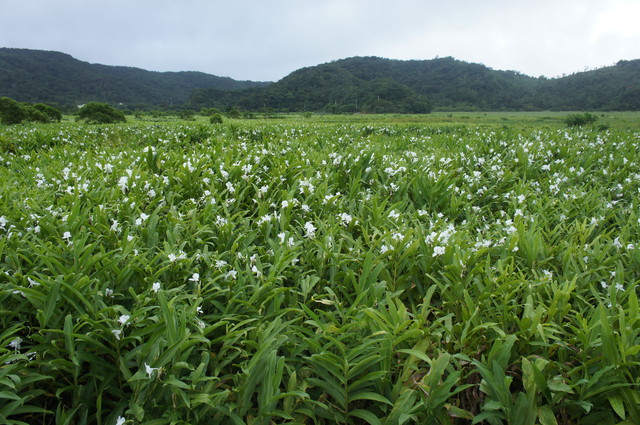

野薑花季
每年7至9月沿著199縣道到了東源及牡丹村，發現兩旁白色野薑花
盛開，面積廣達50公頃的野薑花海，讓空氣中散發著迷人清新的野
薑花香，這條全國最香道路，成為單車騎士響往的朝聖路線，讓遊
客驚豔不已。
東源國家重要濕地內孕育台灣特有種水社柳，開出金黃花穗而有「
金柳」之稱，目前被林務局評估保育等級為「瀕臨絕滅」，全台成
熟個體低於2500株，東源濕地內就約有1500株，是全台灣最大野生
水社柳族群所在地，漫步東源環湖步道就可看見它的美麗身影。
野薑花季7月27日、7月28日、8月3日、8月4日在東源森林遊樂區舉
辦，巫師祈福及部落青年報信鳴槍揭幕，部落競技精采百出，湖畔
飄拂樂舞邀請新寶島康樂隊、民雄等藝人搖擺野薑花季。挑戰199
鐵馬路跑活動，邀請全國遊客享受野薑花清新的幸福滋味。每年7至
9月沿著199縣道到了東源及牡丹村，發現兩旁白色野薑花
盛開，面積廣達50公頃的野薑花海，讓空氣中散發著迷人清新的野
薑花香，這條全國最香道路，成為單車騎士響往的朝聖路線，讓遊
客驚豔不已。
東源國家重要濕地內孕育台灣特有種水社柳，開出金黃花穗而有「
金柳」之稱，目前被林務局評估保育等級為「瀕臨絕滅」，全台成
熟個體低於2500株，東源濕地內就約有1500株，是全台灣最大野生
水社柳族群所在地，漫步東源環湖步道就可看見它的美麗身影。
野薑花季7月27日、7月28日、8月3日、8月4日在東源森林遊樂區舉
辦，巫師祈福及部落青年報信鳴槍揭幕，部落競技精采百出，湖畔
飄拂樂舞邀請新寶島康樂隊、民雄等藝人搖擺野薑花季。挑戰199
鐵馬路跑活動，邀請全國遊客享受野薑花清新的幸福滋味。
資訊取自:https://www.ettoday.net/news/20130719/243722.html
圖片來源:http://mypaper.pchome.com.tw/tjuku0502/post/1323117
234